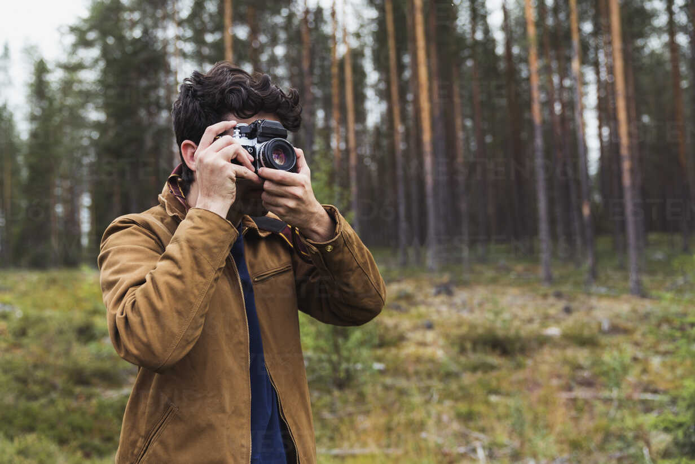
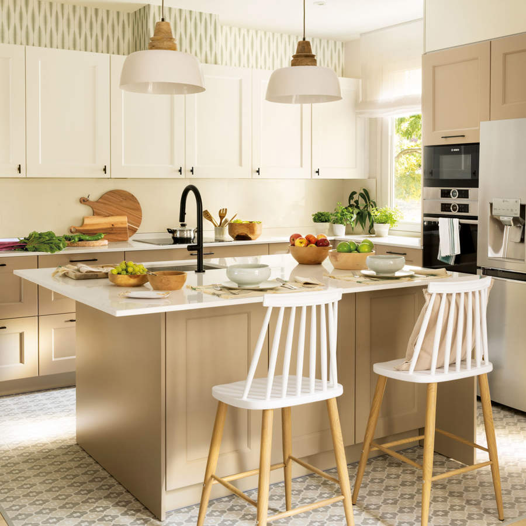
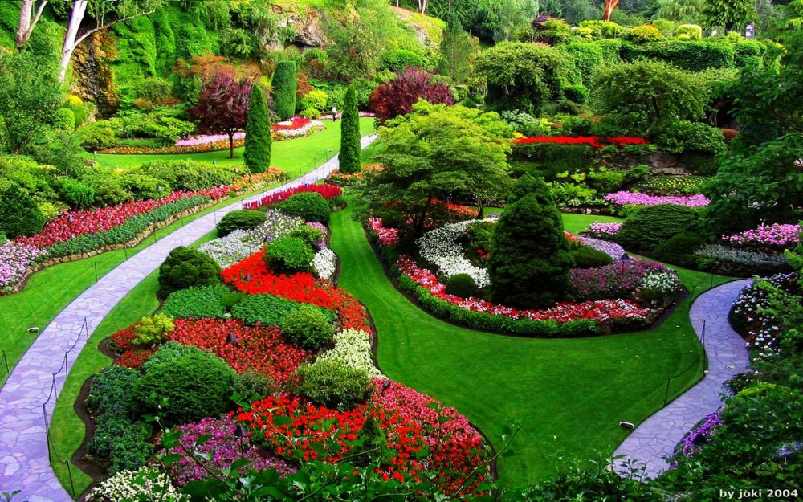
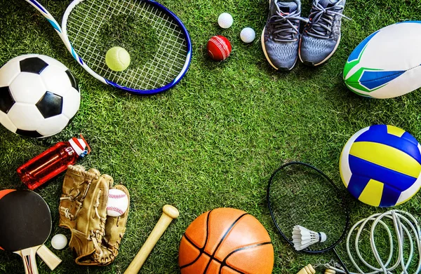

Fotografía
La fotografía es una excelente manera de capturar momentos y expresar creatividad. Aprender a manejar una cámara y editar tus fotos puede ser muy gratificante.
Cocina
La cocina no solo es una necesidad diaria, sino también un arte. Experimentar con nuevas recetas y técnicas puede ser una actividad divertida y deliciosa.
Jardinería
La jardinería es una actividad relajante que te conecta con la naturaleza. Cultivar tus propias plantas y flores puede mejorar tu entorno y tu bienestar.
Lectura
Leer es una de las mejores maneras de aprender y escapar a otros mundos. Ya sea ficción, no ficción o poesía, hay un libro para cada gusto.
Deportes
Practicar deportes mejora la salud física y mental. Además, fomenta el trabajo en equipo y la disciplina personal.
Viajes

Viajar te permite descubrir nuevas culturas, paisajes y experiencias. Planificar y realizar viajes es una manera emocionante de ampliar tus horizontes.